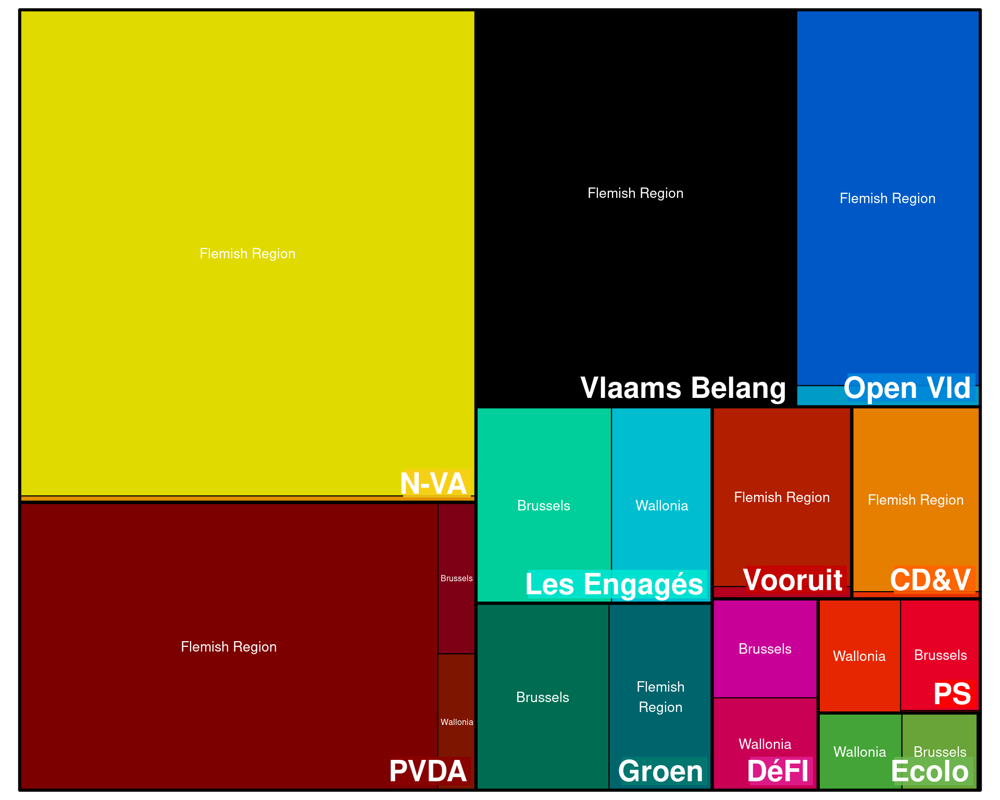
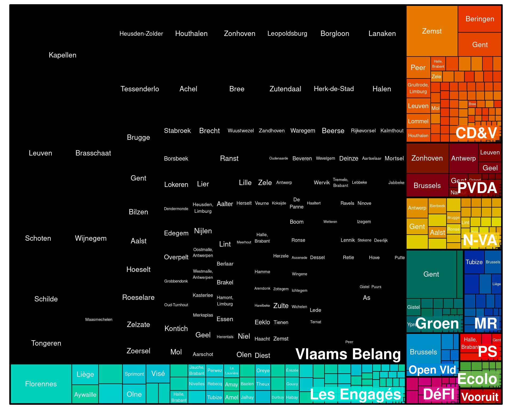
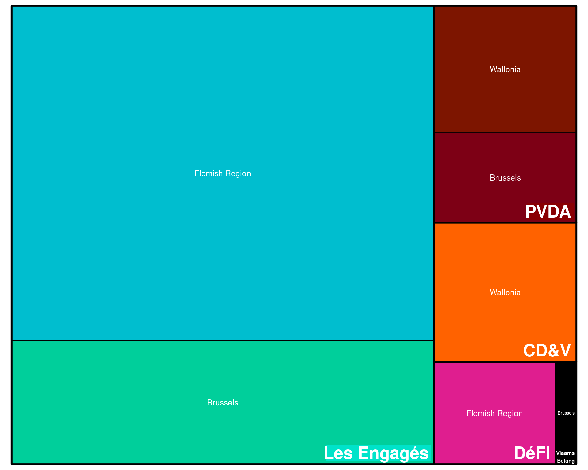
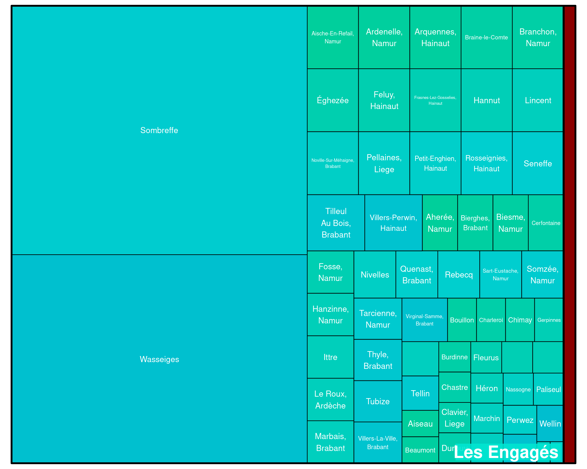

Location
Geographical Targeting
The chart below displays the geographical targeting of that political parties on Meta platforms.
The size of each area in the chart indicates the amount of money spent by each political party on specific locations.
The size of each area in the chart indicates the amount of money spent by each political party on specific locations.

Geographical Exclusion
The following graphs depict the geographic locations that certain political advertisements will exclude on Meta, along with the amounts that parties spent on these exclusions.
The size of each area in the chart indicates the amount of money spent by each political party on specific locations.

The size of each area in the chart indicates the amount of money spent by each political party on specific locations.
